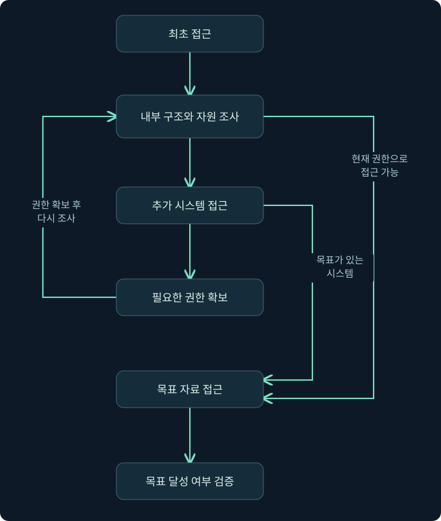

위협 인텔리전스와 공격 생명주기: 흩어진 행동을 하나의 사건으로 연결하기
IOC와 TTP, STIX·TAXII, Cyber Kill Chain과 내부 이동의 반복을 배우고, 문서 접근과 유출을 증거로 구분합니다.
지난 강의에서는 공격 행동을 목적인 전술, 방법인 기법, 구체적인 구현인 절차로 나누었습니다. 또한 어떤 행동이 관측됐다는 사실과, 그 행동이 악성이라는 판단을 구분해야 한다고 배웠습니다.
이번에는 여기서 한 단계 나아가겠습니다.
“공격자가 무엇을 할지 어떻게 예상하고, 여러 기록을 어떤 흐름으로 연결해야 할까요?”
이번 범위는 위협 인텔리전스, 공격 생명주기, MITRE ATT&CK입니다. 공식 자료에서 정의와 현재의 활용상 주의점을 함께 확인했습니다.
아래 보고서·주소·시간표는 모두 강의용 가상 예제입니다. 실제 위협 보고서나 패킷 파일을 분석한 결과는 아닙니다.
1. “이 주소가 수상합니다”라는 정보만으로 충분할까요?
보안 담당자가 다음과 같은 메시지를 받았다고 생각해 보겠습니다.
“
198.51.100.20이 공격에 사용됐습니다.”
이 정보를 받으면 가장 먼저 무엇을 해야 할까요?
곧바로 차단하고 싶을 수 있습니다. 그런데 잠깐 생각해 보면 확인할 것이 많습니다.
언제 사용된 주소일까요? 공격자가 직접 운영한 서버였을까요, 아니면 정상 서버가 일시적으로 침해됐던 것일까요? 현재도 같은 용도로 사용되고 있을까요? 우리 조직에서 이 주소로 접속했다면 어떤 행동이 발생한 것일까요?
주소 하나는 조사 단서가 될 수 있지만, 그 자체로 대응 방법까지 설명해 주지는 않습니다.
생활 속 비유로 생각해 보겠습니다.
“흰색 승합차를 조심하세요”라는 말과 다음 설명은 정보의 가치가 다릅니다.
“최근 이 지역에서 배송업체를 사칭한 방문 사례가 있었습니다. 방문자는 배송 확인을 이유로 출입증을 요구했습니다. 방문 차량의 색상보다 출입증을 요구하는 행동을 확인하세요.”
두 번째 설명에는 상황, 행동, 주의할 이유, 대응 방향이 들어 있습니다.
보안에서도 이렇게 정보에 맥락과 분석을 더해 판단에 사용할 수 있도록 만든 지식이 필요합니다. 이를 Cyber Threat Intelligence, CTI, 사이버 위협 인텔리전스라고 부릅니다. NIST도 의사결정에 필요한 맥락을 제공하도록 위협 정보를 분석·해석·보강한 것으로 설명합니다. 공식 근거: NIST 위협 인텔리전스 정의
다만 비유와 실제 조사는 다릅니다. 네트워크 주소와 도메인은 소유자나 용도가 바뀔 수 있고, 여러 사용자가 같은 기반 시설을 공유할 수도 있습니다. 따라서 언제, 어떤 맥락에서 관측됐는지가 중요합니다.
같은 정보를 조금씩 보강해 봅시다
가상 사례에서 처음 확보한 기록이 다음과 같다고 하겠습니다.
“직원 단말이
updates.example.com을 조회했다.”
이것은 우선 도메인 이름 조회가 있었다는 관측 사실입니다. 도메인은 사람이 읽기 쉬운 이름이고, DNS는 이런 이름을 IP 주소 등의 정보와 연결하는 시스템입니다.
여기에 다음 기록이 추가됐다고 해보겠습니다.
“조회 직후 해당 단말이 응답으로 받은 주소에 연결했다.”
이제 이름 조회와 연결의 관계를 조사할 수 있습니다. 하지만 여전히 프로그램 업데이트인지, 악성 활동인지 알 수 없습니다.
다음으로, 가상의 위협 보고서에 이런 설명이 있다고 가정해 보겠습니다.
“최근 조사한 사건에서는 새로 등록된 예약 작업이 프로그램을 실행했고, 그 프로그램이 제어 서버와 반복 통신한 뒤 공유 문서에 접근했다.”
이 설명은 조사 질문을 만들어 줍니다.
우리 단말에도 새 예약 작업이 있었을까요? 그 작업이 실행한 프로그램이 통신을 생성했을까요? 이후 공유 문서 접근이 있었을까요?
여기서 인텔리전스가 하는 일은 “범인이 누구다”라고 대신 결론 내려주는 것이 아닙니다. 어떤 증거를 우선 확인할지 방향을 잡아주는 것입니다.
2. IOC와 TTP는 어떻게 함께 사용하나요?
지난 강의의 TTP와 함께 알아둘 용어가 있습니다.
IOC, Indicator of Compromise는 침해와 관련된 활동을 찾아내는 데 사용하는 단서나 패턴을 뜻합니다. 흔히 악성 파일의 해시, 도메인, IP 주소 등이 예로 등장합니다.
파일 해시는 파일 내용에 계산을 적용해 얻는 값입니다. 같은 내용을 가진 파일을 비교하는 데 유용하지만, 파일이 악성인 이유나 누가 실행했는지까지 설명하지는 않습니다.
IOC를 활용할 때는 두 가지 질문을 구분해야 합니다.
“이미 알려진 단서와 일치하는가?”
“그 일치가 우리 환경에서 무엇을 의미하는가?”
예를 들어 과거 공격에 사용된 주소와 접속 기록이 일치할 수 있습니다. 하지만 그 주소가 공유 서비스였는지, 사건 당시에도 공격자에게 사용되고 있었는지에 따라 해석은 달라집니다.
RFC 9424도 IOC를 활용할 때 관측 시점, 용도, 관련 위협, 신뢰도 같은 맥락을 고려해 모니터링이나 차단 방식을 선택하도록 설명합니다. 공식 근거: RFC 9424
주소가 바뀌면 행동도 사라질까요?
공격자가 접속 주소를 바꿨다고 생각해 보겠습니다.
기존 IP 주소만 검색하면 새로운 통신을 놓칠 수 있습니다. 그러나 다음 행동은 남아 있을 수 있습니다.
“새로운 예약 작업이 프로그램을 실행하고, 그 프로그램이 반복 통신한 뒤 제한된 공유 폴더에 접근한다.”
이것은 개별 주소보다 행동의 관계를 보는 관점입니다.
그렇다고 행동 분석이 언제나 우월한 것은 아닙니다. 공격자가 행동을 바꾸거나, 필요한 기록이 수집되지 않으면 행동 기반 분석도 놓칠 수 있습니다. 반대로 사건 직후의 정확한 IOC는 빠른 조사에 매우 유용할 수 있습니다.
| 활용 대상 | 도움이 되는 질문 | 주의할 점 |
|---|---|---|
| IP·도메인 | 알려진 기반 시설과 통신했는가? | 사용 시점·공유 여부·용도를 확인해야 함 |
| 파일 해시 | 알려진 파일과 내용이 일치하는가? | 파일이 바뀌면 값도 달라질 수 있음 |
| TTP | 어떤 목적을 위해 어떤 행동을 했는가? | 정상 활동과 구분할 맥락과 기록이 필요함 |
따라서 실제 조사에서는 알려진 단서로 범위를 좁히고, 주변 행동으로 의미를 확인하며, 그 과정에서 새로운 단서를 찾게 됩니다.
보고서를 읽을 때는 무엇을 확인해야 할까요?
처음부터 공격자 이름과 도구 이름을 모두 외우려고 하지 않아도 됩니다. 먼저 다음 질문에 답해 보세요.
| 확인 항목 | 읽으면서 던질 질문 |
|---|---|
| 출처와 근거 | 직접 조사한 사건인가, 다른 보고서를 인용했는가? |
| 시점 | 보고서 발행일과 실제 사건 발생일은 언제인가? |
| 적용 환경 | Windows 단말, 클라우드 계정 등 어떤 환경의 사례인가? |
| 확실성 | 직접 확인한 사실과 추정한 내용을 구분했는가? |
| 활용 방법 | 우리 환경에서는 어떤 기록으로 확인할 수 있는가? |
특히 여러 글이 같은 원본 보고서를 인용했다면, 글의 개수가 많다고 독립적인 증거가 많아진 것은 아닙니다.
또한 신뢰도와 심각도는 다릅니다. 사실일 가능성을 얼마나 확신하는지와, 사실이라면 얼마나 큰 피해가 가능한지는 별도의 판단입니다.
3. STIX와 TAXII는 공격을 탐지하는 도구인가요?
위협 정보를 표현하고 공유하는 기술로 CAPEC, CybOX, STIX, TAXII 등이 등장합니다. 이 이름들을 모두 같은 종류의 도구로 외우면 혼동하기 쉽습니다.
먼저 다음 상황을 생각해 보겠습니다.
한 조직은 도메인과 관측 시점을 문서로 보내고, 다른 조직은 표로 보냅니다. 어떤 조직은 공격 기법과 관련 파일의 관계까지 설명합니다.
사람은 읽고 해석할 수 있지만, 시스템이 자동으로 처리하려면 공통된 표현 방식이 필요합니다.
STIX는 정보를 표현하는 구조입니다
STIX, Structured Threat Information Expression은 위협 정보와 그 관계를 구조화해 표현하는 언어입니다.
예를 들어 도메인, 악성 프로그램, 공격 행동, 보고서 사이의 관계를 기계가 처리할 수 있는 형태로 표현할 수 있습니다. 이번 강의에서는 STIX 2.1을 기준으로 설명합니다. 공식 근거: STIX 2.1
비유하면 STIX는 사건 정보를 기록하는 공통 양식과 표현 규칙에 가깝습니다.
TAXII는 정보를 주고받는 통신 규칙입니다
TAXII, Trusted Automated Exchange of Intelligence Information는 사이버 위협 정보를 교환하기 위한 프로토콜입니다. 프로토콜은 시스템끼리 통신할 때 따르는 규칙을 뜻합니다.
이번 강의의 기준인 TAXII 2.1은 위협 정보를 주고받는 API와 클라이언트·서버의 동작을 정의합니다. API는 프로그램이 다른 시스템의 기능이나 데이터에 접근하는 접점이라고 생각하면 됩니다. 공식 근거: TAXII 2.1
비유하면 TAXII는 작성된 정보를 전달하고 받아오는 방식에 가깝습니다.
| 이름 | 주된 역할 |
|---|---|
| STIX | 위협 정보와 관계를 구조화해 표현 |
| TAXII | 위협 정보를 시스템 간에 교환 |
| CAPEC | 공격 패턴에 관한 지식을 분류·정리 |
CAPEC은 정보 전송 프로토콜이 아닙니다. MITRE는 CAPEC을 공격 패턴을 이해하고 애플리케이션 보안 등에 활용하는 지식 체계로 설명합니다. 공식 근거: CAPEC과 ATT&CK 비교
CybOX도 현재 구조와 연결해 이해해야 합니다. OASIS는 STIX 2에서 CybOX의 관측 정보 표현을 통합했으며, 관련 객체를 STIX Cyber Observables라고 설명합니다. 따라서 과거 이름들을 모두 별개의 필수 구성 요소처럼 받아들이지는 마세요. 공식 근거: STIX 1·CybOX와 STIX 2 비교
이렇게 표현과 교환이 표준화돼도 정보가 자동으로 사실이 되거나, 안전한 차단 규칙으로 바뀌는 것은 아닙니다. 정보의 출처와 적용 조건을 판단하는 과정은 여전히 필요합니다.
4. 공격 생명주기는 왜 필요할까요?
이제 위협 보고서를 읽고 단서를 얻었다고 해보겠습니다.
조사를 시작하니 다음 기록이 나왔습니다.
- 의심스러운 이메일
- 새로운 프로그램 실행
- 예약 작업 등록
- 다른 서버로의 접속
- 문서 읽기
이것들을 따로 보면 개별 사건의 목록입니다. 하지만 우리는 더 큰 질문에 답해야 합니다.
“어떻게 시작됐고, 어디까지 진행됐으며, 아직 무엇을 확인하지 못했을까요?”
공격 생명주기, Attack Lifecycle는 이런 행동을 큰 흐름으로 이해하기 위한 모델입니다.
여행 지도를 떠올리면 좋습니다. 지도는 이동 경로를 이해하는 데 도움이 되지만, 여행자가 실제로 어느 길을 갔는지를 증명하지는 않습니다. 실제 경로는 별도의 기록으로 확인해야 합니다.
공격 모델도 마찬가지입니다.
모델은 다음 조사 질문을 만들지만, 비어 있는 증거를 대신 채워주지는 않습니다.
5. Cyber Kill Chain: 공격을 큰 단계로 보기
Lockheed Martin의 Cyber Kill Chain은 공격을 일곱 단계로 정리합니다. 공격 과정을 이해하고, 어느 지점에서 탐지하거나 저지할 수 있는지 생각하기 위한 모델입니다. 공식 근거: Cyber Kill Chain
다음 표는 단계의 의미를 간단히 정리한 것입니다. 옆의 질문은 강의용 조사 질문입니다.
| 단계 | 기본 의미 | 조사에서 던질 질문 |
|---|---|---|
| Reconnaissance · 정찰 | 대상에 관한 정보 수집 | 대상과 접근 경로를 어떻게 알아냈는가? |
| Weaponization · 무기화 | 공격에 사용할 수단 준비 | 전달된 파일이나 도구는 무엇인가? |
| Delivery · 전달 | 공격 수단을 대상에게 전달 | 이메일·웹 등 어떤 경로로 도달했는가? |
| Exploitation · 악용 | 약점을 이용해 공격 동작 유발 | 실행이나 악용을 뒷받침하는 증거가 있는가? |
| Installation · 설치 | 접근 유지에 필요한 구성 요소 설치 | 어떤 파일이나 설정이 추가됐는가? |
| Command and Control · 명령 및 제어 | 공격자가 제어하는 통신 경로 형성 | 통신의 상대와 용도를 확인했는가? |
| Actions on Objectives · 목표 수행 | 자료 탈취·변조 등 목적 달성 | 실제로 어떤 영향을 주었는가? |
일곱 단계의 기본 구분은 Lockheed Martin의 원 논문을 기준으로 했습니다. 공식 근거: Intelligence-Driven Computer Network Defense
전달과 악용은 구분해야 합니다
전달과 악용은 설명이 비슷하게 들릴 수 있지만, 서로 다른 결과를 확인하는 단계입니다.
다음처럼 구분해 보세요.
전달: 공격 수단이 대상에게 도달했다.
악용: 그 수단이 약점을 이용해 공격 동작을 일으켰다.
AWS의 해당 모델 해설도 전달과, 전달된 수단이 취약점·설정 오류 등의 약점을 악용하는 단계를 구분합니다. 공식 근거: AWS의 침입 단계 해설
가상 사례로 생각해 보겠습니다.
메일 서버가 첨부파일이 포함된 메시지를 수신했습니다. 이것은 전달 관련 증거입니다.
하지만 사용자가 첨부파일을 열지 않았을 수도 있고, 열었어도 악용에 실패했을 수 있습니다. 따라서 메일 수신 기록만으로 프로그램 실행이나 침해 성공까지 판단할 수 없습니다.
앞 단계의 성공이 다음 단계의 성공을 보장하지 않습니다.
이 모델을 모든 사건에 그대로 끼워 맞춰도 될까요?
이번에는 공격자가 이미 탈취한 계정으로 온라인 문서 서비스에 로그인했다고 해보겠습니다.
그 서비스에서 문서를 열어 내려받았다면, 조사 환경에서 별도의 악성 파일 설치나 전통적인 제어 프로그램을 찾지 못할 수 있습니다.
이때 모델에 Installation이 있다는 이유로 “설치 흔적을 아직 못 찾았을 뿐 반드시 있었을 것”이라고 판단하면 안 됩니다.
실제 사건이 어떤 방식으로 진행됐는지 먼저 확인하고, 모델은 그 흐름을 정리하는 데 사용해야 합니다.
6. Mandiant 모델: 내부에 들어온 뒤의 진행을 보기
Cyber Kill Chain으로 큰 흐름을 파악했다면 다음 질문이 남습니다.
“처음 들어온 컴퓨터와 중요 문서 서버는 다른데, 그 사이에서는 무엇이 일어날까요?”
Mandiant Targeted Attack Lifecycle은 내부 탐색, 권한 확보, 다른 시스템으로의 이동 등을 구분합니다. 현재 Mandiant 공식 해설에서도 같은 주요 단계를 확인할 수 있으며, 모든 공격이 정확히 같은 흐름을 따르지는 않는다고 설명합니다. 공식 근거: Targeted Attack Lifecycle
| 단계 | 이해할 핵심 |
|---|---|
| Initial Reconnaissance · 초기 정찰 | 외부에서 대상과 접근 경로 조사 |
| Initial Compromise · 최초 침해 | 환경 안에서 첫 침해 발생 |
| Establish Foothold · 거점 확보 | 처음 확보한 접근을 이어갈 기반 마련 |
| Escalate Privileges · 권한 확대 | 더 많은 시스템·자료에 접근할 권한 확보 |
| Internal Reconnaissance · 내부 정찰 | 내부 구조와 목표 위치 파악 |
| Move Laterally · 측면 이동 | 추가 시스템으로 접근 범위 확대 |
| Maintain Presence · 접근 유지 | 환경에 계속 접근할 수단 유지 |
| Complete Mission · 임무 완수 | 자료 탈취 등 공격 목표 수행 |
이 단계 명칭과 기본 역할은 Mandiant의 공식 설명에 근거합니다. 공식 근거: Targeted Attack Lifecycle
여기서는 두 가지 차이를 이해하면 좋습니다.
먼저 외부 정찰과 내부 정찰입니다.
밖에서는 공개 웹사이트나 외부 접속 경로를 조사할 수 있습니다. 내부에 들어온 뒤에는 실제 서버 구성, 공유 자원, 계정의 접근 범위처럼 밖에서 알기 어려운 정보를 확인하게 됩니다.
다음은 최초 거점 확보와 접근 유지입니다.
처음 확보한 시스템에서 접근을 이어갈 기반을 만드는 것과, 조직 환경에서 장기간 접근을 유지하는 것은 관련되지만 강조점이 다릅니다. 특정 도구 하나로 기계적으로 구분하기보다, 행동이 어떤 역할을 했는지 살펴보세요.
내부에서는 같은 단계가 반복될 수 있습니다
처음 접근한 단말에서는 중요 문서 서버를 찾았지만 접근 권한이 없을 수 있습니다.
다른 시스템에 접근한 뒤에는 새로운 정보가 보일 수 있습니다. 그 정보를 바탕으로 다시 내부 구조를 조사하고 다음 경로를 선택할 수 있습니다.
그림 1. 내부 탐색과 이동이 반복되는 가상 흐름
화살표는 가능한 진행 방향입니다. 모든 사건이 이 경로를 따른다는 뜻은 아닙니다.

그림에서 주목할 부분은 되돌아가는 화살표와 지름길입니다.
권한을 확보한 뒤 다시 탐색할 수도 있고, 처음부터 접근 권한이 충분하면 별도의 권한 상승 없이 목표 자료에 도달할 수도 있습니다.
따라서 권한 상승 기록이 없다고 공격 흐름 전체가 성립하지 않는 것은 아닙니다. 반대로 다른 서버와 통신했다고 해서 권한 상승이나 원격 실행까지 발생했다고 볼 수도 없습니다.
7. ATT&CK은 이 흐름에서 무엇을 더해 줄까요?
두 생명주기 모델은 공격의 큰 흐름을 설명합니다.
지난 강의의 ATT&CK은 그 안에서 구체적으로 어떤 행동이 사용됐는지를 정리하는 데 도움이 됩니다.
| 관점 | 중심 질문 |
|---|---|
| Cyber Kill Chain | 공격의 큰 흐름에서 어떤 활동에 해당하는가? |
| Mandiant 생명주기 | 침입 이후 접근 범위와 영향이 어떻게 확대됐는가? |
| ATT&CK | 관측한 행동을 어떤 전술·기법으로 설명할 수 있는가? |
이 관계는 강의에서 이해를 돕기 위해 비교한 것입니다. 서로의 항목을 반드시 일대일로 대응시켜야 하는 것은 아닙니다.
공유 폴더에서 문서를 읽었다면 측면 이동일까요?
같은 네트워크 활동도 목적과 구현을 살펴봐야 합니다.
공격자가 현재 단말에서 공유 폴더의 문서를 수집했다면, ATT&CK의 T1039, Data from Network Shared Drive를 검토할 수 있습니다. 이 기법은 Collection, 수집 전술에 속합니다. 공식 근거: T1039
여기서 공유 폴더는 여러 컴퓨터가 네트워크를 통해 접근하도록 제공한 폴더입니다.
중요한 점은 다음과 같습니다.
다른 서버의 문서를 읽었다는 사실과, 그 서버에서 프로그램을 실행하거나 제어권을 얻었다는 사실은 다릅니다.
또한 자료 수집과 외부 유출도 다릅니다. ATT&CK의 T1041, Exfiltration Over C2 Channel은 기존 명령 및 제어 통신을 이용한 자료 유출을 다룹니다. 이 항목을 적용하려면 단순한 외부 통신 이상의 근거가 필요합니다. 공식 근거: T1041
따라서 다음 연결을 자동으로 만들면 안 됩니다.
공유 폴더 접속 → 서버 장악 → 문서 수집 → 외부 유출
각 단계 사이에는 별도의 증거가 필요합니다.
ATT&CK의 칸 하나를 채우면 탐지가 완료된 것일까요?
예를 들어 예약 작업을 사용하는 한 가지 절차를 시험했고 경보가 발생했다고 해보겠습니다.
이 결과는 시험한 조건과 절차에서 탐지가 작동했다는 근거입니다. 다른 생성 방식, 계정, 실행 조건에서도 모두 탐지된다는 보장은 아닙니다.
MITRE도 한 가지 구현을 확인한 것으로 기법 전체를 대응했다고 판단하거나, 모든 칸을 채우는 것을 목표로 삼지 말라고 안내합니다. 공식 근거: ATT&CK 활용 시 주의점
탐지 결과에는 어떤 환경과 조건에서 검증했는지가 함께 기록돼야 합니다.
8. 가상 사건을 실제 조사처럼 연결해 봅시다
이제 앞에서 배운 내용을 하나의 사례에 적용하겠습니다.
다음은 작성한 가상 기록입니다. 시각은 같은 시간대이며, 장비 사이의 시계 차이는 보정됐다고 가정합니다.
주소는 문서용입니다.
- 직원 단말:
192.0.2.10 - 문서 서버:
192.0.2.20 - 외부 서버 역할:
198.51.100.20 - 예시 도메인:
updates.example.com
8.1 처음 확보한 기록
| 시각 | 자료 | 가상 관측 내용 |
|---|---|---|
| 09:00 | DNS 기록 | 단말이 예시 도메인을 조회하고 외부 서버 주소를 응답받음 |
| 09:01 | 패킷 기록 | 단말과 외부 서버 사이에 TLS 연결과 암호화된 데이터 교환이 나타남 |
| 09:03 | 문서 서버 기록 | 특정 직원 계정으로 시험 문서 읽기가 성공함 |
| 09:04 | 네트워크 기록 | 단말에서 외부 서버로 보내는 데이터가 증가함 |
TLS는 통신을 암호화하고 상대 확인 등을 지원하는 보안 프로토콜입니다. 패킷에서 TLS가 식별돼도 복호화에 필요한 조건이 없으면 안쪽 내용을 읽지 못할 수 있습니다.
이 기록을 처음 보면 이렇게 연결하기 쉽습니다.
“제어 서버에 접속한 뒤 문서를 읽어서 유출했다.”
가능한 가설입니다. 하지만 아직 확인되지 않은 연결이 있습니다.
8.2 사실과 가설을 분리합니다
현재 기록이 직접 보여주는 것은 이름 조회, TLS 통신, 특정 계정의 문서 읽기, 외부 송신량 증가입니다.
반면 다음은 추가 검증이 필요한 가설입니다.
“동일한 프로그램이 통신과 문서 읽기를 수행했고, 읽은 문서 내용을 외부로 전송했다.”
이 가설을 확인하려면 적어도 세 가지 연결을 살펴봐야 합니다.
첫째, 어떤 프로세스가 외부 통신을 생성했는가?
둘째, 문서를 읽은 계정과 세션이 해당 단말 활동에 연결되는가?
셋째, 외부로 보낸 내용이 해당 문서와 관련되는가?
IP 주소와 시각이 비슷하다는 사실만으로 세 연결이 모두 입증되지는 않습니다. 같은 단말에서 브라우저, 동기화 프로그램, 보안 프로그램 등이 동시에 통신할 수 있기 때문입니다.
또한 서버에서 읽기가 성공한 계정이 기록돼도, 그 계정을 실제로 사용한 사람이 정당한 사용자였는지는 별도의 문제입니다.
8.3 패킷 조사 범위를 좁혀 봅시다
문서 서버와의 통신을 먼저 확인하고 싶다고 해보겠습니다.
Windows 파일 공유에서 사용하는 프로토콜 중 하나가 SMB, Server Message Block입니다. 여기서는 TCP 445번 포트를 사용하는 SMB 통신을 가정하겠습니다.
터널이 없는 일반적인 IPv4 통신에서 다음 표시 필터를 생각할 수 있습니다.
ip.addr == 192.0.2.10
and ip.addr == 192.0.2.20
and tcp.port == 445첫 조건은 직원 단말 주소가 포함된 패킷을 찾습니다.
두 번째 조건은 그중 문서 서버 주소도 포함된 패킷으로 좁힙니다. 두 주소가 서로 다르므로, 가정한 일반 IPv4 패킷에서는 두 호스트 사이의 통신을 선택하게 됩니다.
마지막 조건은 TCP 출발지 또는 목적지 포트가 445인 패킷을 찾습니다. and는 세 조건을 모두 만족해야 한다는 뜻입니다. 주소 비교와 논리 조건의 문법은 Wireshark 공식 안내를 기준으로 했습니다. 공식 근거: Wireshark 표시 필터
이 필터는 조사할 패킷을 고르는 식입니다. 문서 읽기 성공이나 악성 여부를 판정하는 식은 아닙니다.
SMB2로 해석된 패킷은 Wireshark의 smb2 프로토콜 필드로 살펴볼 수 있지만, 실제로 어떤 내용이 보이는지는 수집 범위와 암호화 등에 따라 달라집니다. 공식 근거: SMB2 표시 필터 참조
응답이 없다면 읽기에 실패한 것일까요?
그럴 수도 있지만, 응답 방향의 패킷을 수집하지 못했을 수도 있습니다.
수집 위치에서 요청만 보였거나, 패킷이 누락됐거나, 표시 필터가 필요한 트래픽을 제외했을 수도 있습니다. 통신이 암호화됐다면 파일 이름이나 내용을 확인하지 못할 수 있고, 데이터 재조립 상태도 해석에 영향을 줄 수 있습니다.
따라서 패킷 기록을 문서 서버의 파일 접근 기록과 대조해야 합니다. 인증 기록, 연결을 생성한 프로세스 기록, 방화벽이나 중간 장비 기록도 도움이 됩니다.
8.4 생명주기 모델은 여기서 어떻게 사용하나요?
모델은 다음 질문을 만들어 줍니다.
문서를 읽기 전에 어떤 방식으로 계정을 사용했을까요? 내부에서 문서 위치를 탐색했을까요? 접근 권한은 원래 있었을까요, 별도로 확보했을까요? 읽은 자료가 외부로 나갔을까요?
이 질문들은 유용하지만 답을 미리 정하지는 않습니다.
예를 들어 수집이 확인됐다고 외부 유출도 발생했다고 기록하면 안 됩니다. 아직 모르는 부분은 다음처럼 남겨야 합니다.
“시험 문서 읽기는 확인됐다. 이후 외부 송신량이 증가했으나, 전송 내용과 문서의 관계는 확인되지 않았다.”
이렇게 작성하면 후속 조사자가 무엇을 알고 있고, 무엇을 더 확인해야 하는지 바로 이해할 수 있습니다.
9. 위협 보고서를 레드팀 검증 시나리오로 바꾸기
이제 조사 관점을 훈련 설계에 연결하겠습니다.
가상의 위협 보고서에 다음 행동이 설명돼 있다고 하겠습니다.
“공격자는 확보한 접근을 유지하고, 내부 공유 자원을 조사한 뒤 관심 문서를 수집했다.”
이 설명을 읽고 곧바로 도구 목록부터 작성할 필요는 없습니다.
먼저 조직이 알고 싶은 질문으로 바꿔 봅시다.
“일반 직원 단말에서 비정상적인 실행 유지 설정과 제한 문서 접근이 이어질 때, 조직은 이를 연결해 조사할 수 있는가?”
그다음 행동과 관측 증거를 연결합니다.
| 검증할 행동 | 실습에서 확인할 증거 |
|---|---|
| 무해한 프로그램의 재실행 조건 등록 | 설정 생성 기록과 등록 주체 |
| 설정된 조건에서 프로그램 실행 | 실제 실행 기록과 실행 계정 |
| 지정한 시험 문서 접근 | 서버의 접근 결과와 사용 계정 |
| 탐지 및 조사 | 경보 생성, 분석가의 확인, 후속 조치 기록 |
이 표는 실행 결과가 아니라 검증 설계 예시입니다.
실제 보고서의 악성 프로그램을 그대로 사용하지 않아도, 검증하려는 행동과 관련 기록을 재현할 수 있다면 의미 있는 시험이 될 수 있습니다. 다만 대체 방법이 원래 행동과 다른 기록을 만든다면, 무엇을 검증했고 무엇은 검증하지 못했는지 밝혀야 합니다.
훈련 결과도 세 층으로 나눠 볼 수 있습니다.
- 행동 수행: 계획한 행동이 실제로 일어났는가?
- 관측과 탐지: 관련 기록이 수집되고 필요한 경보가 발생했는가?
- 조사와 대응: 담당자가 의미를 파악하고 적절한 조치를 했는가?
프로그램이 실행되지 않았다면 ‘실행 후 행동 탐지’를 평가하기 어렵습니다. 반대로 행동이 성공하고 기록도 남았지만 경보가 없다면, 수집 이후 탐지 과정부터 살펴볼 수 있습니다.
이 구분이 있어야 훈련 결과를 실제 개선 작업으로 연결할 수 있습니다.
10. 복습 질문과 해설
복습 1. 과거 공격에 사용된 IP 주소와 접속 기록이 일치했습니다. 현재 단말의 침해를 확정할 수 있을까요?
해설: 일치는 중요한 조사 단서지만, 그것만으로 확정하기는 어렵습니다.
사건 시점에도 같은 용도였는지, 공유 기반 시설인지, 어떤 프로그램이 어떤 통신을 했는지 확인해야 합니다. 주소의 과거 평판과 현재 단말의 침해 여부는 연결해서 검증해야 할 별개의 사실입니다.
복습 2. 악성 첨부파일이 사서함에 도달했습니다. Cyber Kill Chain의 Exploitation까지 성공했다고 볼 수 있을까요?
해설: 전달 관련 증거는 확보했지만 악용 성공은 별도로 확인해야 합니다.
첨부파일을 열지 않았거나, 열었어도 공격 동작이 차단됐을 수 있습니다. 실행·악용을 뒷받침하는 단말 기록 등이 필요합니다.
복습 3. 중요 문서 접근은 확인됐지만 권한 상승 기록이 없습니다. 조사 결과가 모순된 것일까요?
해설: 반드시 모순인 것은 아닙니다.
처음 사용한 계정에 이미 필요한 권한이 있었거나, 문서의 접근 통제가 잘못 설정됐을 수 있습니다. 모델에 권한 상승 단계가 있다는 이유로 모든 사건에서 그 단계를 요구하면 안 됩니다.
복습 4. 문서를 읽은 직후 외부 송신량이 늘었습니다. 유출로 기록해도 될까요?
해설: 유출 가능성을 조사할 근거는 있지만, 전송 내용과 문서의 관계가 아직 확인되지 않았습니다.
프로세스·세션의 연결, 단말의 파일 처리 기록, 확보 가능한 서버 측 수신 기록 등을 통해 가설을 검증해야 합니다. 단순한 시간적 연속성과 인과관계를 구분해야 합니다.
복습 5. STIX 형식으로 받은 위협 정보는 검증된 사실인가요?
해설: STIX는 표현 구조를 제공하므로, 형식만으로 정보의 정확성이 보장되지는 않습니다.
출처, 관측 시점, 분석 근거, 적용 환경을 확인해야 합니다. 표준화된 양식에 잘못된 정보가 담길 수도 있습니다.
복습 6. 예약 작업을 이용한 실습에서 경보가 발생했습니다. 해당 ATT&CK 기법 전체를 탐지한다고 평가해도 될까요?
해설: 시험한 절차와 조건에서 탐지가 작동했다고 평가할 수 있습니다.
다른 생성 방식이나 실행 조건에서도 같은 결과가 나오는지는 추가 검증 대상입니다. 결과에는 사용한 절차, 환경, 수집 설정과 확인한 경보를 함께 남겨야 합니다.
11. 보완 설명과 공식 자료 확인 범위
확인일: 2026년 11월 2일
이번 강의에서는 다음 부분을 구분해 보완했습니다.
| 항목 | 이번 강의에 적용한 내용 |
|---|---|
| 위협 인텔리전스 | 단서에 맥락과 분석을 더해 의사결정에 연결 |
| 전달과 악용 | 도달한 사실과 공격 동작이 발생한 사실을 구분 |
| 공격 생명주기 | 반복·생략 가능한 분석 모델로 활용 |
| STIX·TAXII | 각각 2.1 기준으로 표현과 교환의 역할을 구분 |
| CybOX | STIX 2의 관측 객체로 통합된 관계를 설명 |
| ATT&CK 검증 | 한 절차의 탐지 성공과 기법 전체의 대응 범위를 구분 |
추가로 읽을 공식 자료입니다.
- NIST: 위협 인텔리전스 정의
- RFC 9424: IOC의 활용과 한계
- Mandiant: Targeted Attack Lifecycle
- OASIS: STIX 2.1 · TAXII 2.1
- MITRE: ATT&CK 활용 시 주의점
다음 3강에서는 검증 목표를 실제 활동 계획으로 바꾸는 방법을 다루겠습니다. 활동 범위를 정하는 ROE, 행동이 남기는 흔적을 고려하는 OPSEC, 작업 기록과 실습 준비를 차례대로 연결하겠습니다.